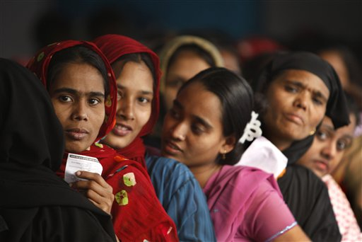

Although today I am overtly delighted with landslide victory of progressive force of Bangladesh, I shared same anxiety of secular people of Bangladesh ever since, I was introduced to Bangladesh eforums late back in 2004, when there was a hue and cry among rank and files of secular groups in Bangladesh that secularism is on retreat in the golden land of Bangla which boosts a poetic harmony for mankind from time immemorial. It is a land of Lalan Fakir, Rabindranath Tagor and Nazrul Islam who spoke of undivided humanity at best and broke the fallacious barrier of being a Muslim or Hindu. This is a land which spoke human being and humanity above all and everything. Unfortunate as it is, with birth of Muslim league, communal harmony of Bengal plunged into rock bottom in the beginning of last century. Perhaps many of my readers do not know, that in 1946, Bengali Muslims actually got caught up with sinister design of two nation theory for exploitation of Bangla by Punjabi Muslims and therefore, along with Hindu leaders like Sarat Bose, Bengali Muslim leaders actually pressed for an united Bengali nation refuting Jinnah's Pakistan and favoring Bengali nationalism over Islamic identity. This was turned down by Muslim league and Congress alike. Although Bengali nationalism in Bangladesh was nipped in the bud in 1947, it took them another 24 years before breaking up with falsehood of Islamic nation theory of Pakistan paying an untold cost of three million people-largest genocide since Holocaust. Although a secular Bengali nation was born in 1971 led by Seikh Mujibur Rahaman, soon military coup d'e'tet took over in 1975 killing the forces of secularism and modern Bangladesh reversing back to Islamic nation. Since these coups were aided by US-Pakistani nexus who were apprehended by Indian-Russian influence over Bangladesh which, at that time, was full of socialist zeal to reorganize the country in Soviet fashion, Ziaur Rahaman took no time to bring back Islam into politics because it is only in Islam, he would have created a new alternative power circle against Bengali nationalism. Like any other military general, Zia started off with populist measure but reversed the momentum of modern Bangladesh into Islamic Bangladesh. After General Ershad took over, he cunningly balanced the country between Islam and Bengali nationalism. However, he was so corrupt to begin with, he too failed the aspiration of common people and was deposed subsequently by a bloodless democratic coup. Since 1991, three elections were held in which BNP led by widow of General Zia and Awami League led by daughter of Seikh Mujibar Rahman shared their power and again failed common people's aspiration for a modern affluent Bangladesh by mindless corruption and complete collapse of state system. However, it is during this democratic time of '91 to 2006, independent media flourished in Bangladesh. This is the biggest gain of democratic era which would prove decisive during present election of 28th December, 2008.
Ever since Bangladesh politics was torn between bitter battle of Bengali versus Islamic nationalism, poor and marginal people of Bangladesh were increasingly frustrated who were asking for food and job rather than anti-Indian or pro Islamic jingoism of BNP or “living in the past ideologies” of the Awami League. It is only in Dec,2008 election, for the first time, Awami League recognized the need for a future looking vision and the fact that young generation is not looking forward to Islam or India or Bengali but a better material living. Their strategy paid off handsomely against the backdrop of outdated conspiracy theorists turned corrupt leaders of BNP and Jamati Islami. Added with it, was empowerment of women voters who outnumbered male and was well aware of danger posed on them by Jamati Islami through Sharia law. They thrashed out all the Islamic parties sending clear message to them that they want Islam as spiritual religion and they do not want criminals as torch bearer of Islam.
Today's victory of Bangladeshi secular modern force is a decisive victory over Islamist extremist force with 4/5th majority and after this, they can not have any excuse of why they could not turn around a modern a Bangladesh with all needed mandate with them. Now they have the opportunity to root out reactionary force that opposed Independence of Bangladesh. As Leon Trotsky once said ” in a serious struggle there is no worse cruelty than to be magnanimous at an inopportune time”- I believe, for progressive force in Bangladesh, that time is now to eradicate poverty and malice of religious extremism. If they fail to listen to marginalized people once again as they did in 1996-2001, they too, will be trashed in history.
For a long time secular intellectuals groused over reversal of attainment of '71 freedom struggle-well people of Bangladesh has given them back what they wanted. So ball is in their court to take Bangladesh to 21st century. I hope with decimation of Islamist force, Seikh Hasina, now can be assured that people are asking for “dal vat” (lentil-rice) and they do not want religious appeasement politics which is a contagious virus in whole south Asia. I am also glad that people of Bangladesh realized hunger is the real enemy and propaganda of Islam or nationalism is a tool for the rulers to mislead them from their fundamental right for food and future.
Joy Bangla!
Dr. Biplab Pal
- A physicist writing from Washington DC
- Can be reached at biplabpal2000 at yahoo dot com
this post on internet archive for mm enblog
comments powered by Disqus